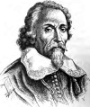

William Harvey (1578-1657) insan dolaşım sisteminin ilk bütünlüklü betimlemesini yapan Batılı doktordur. Buluşları ve bunları kanıtlamak için yaptığı hayvan deneyleri tıp bilimini ve biyologların araştırma yöntemlerini sonsuza dek değiştirmiştir.

Harvey, Kent’teki Folkestone’da dünyaya geldi. Dokuz çocuğun en büyüğüydü. Babasının bir nakliye işi vardı. Aynı zamanda kasabanın belediye başkanıydı. Ailesi onu 1593 yılında Cambridge’e gönderebilecek kadar refah içerisindeydi. Yirmi yaşında okuldan mezun oldu ve tıp eğitimi görmek için İtalya’daki Padova Üniversitesi’ne gitti.
İngiltere’ye döndükten sonra 1604 yılında Elizabeth Browne ile evlendi. Browne’ın babası Lancelot, Kraliçe 1. Elizabeth’in (1533-1603) ve Kral 1. James’in (1566-1625) özel doktoruydu. Bu aile bağı Harvey’e çok faydalı oldu. Sonunda o da bir saray doktoru oldu. 1. James ve 1. Charles’a (1600-1649) hekim olarak hizmet etti.
Harvey, kralın desteğiyle 1620’li yıllarda bir dizi deney yaptı. Bedeni daha iyi anlayabilmek için geyikleri ve diğer hayvanları parçalara ayırarak inceledi. Dönemin yaygın tıbbi teorileri halen Galen’in (126-216) yazılarına dayanıyordu. Bununla birlikte İbn-i Al-Nafis (1213-1288) gibi Arap doktorları yüzyıllar önce pulmonar dolaşım sistemini keşfetmişti. Harvey de sonunda Galen’in düşüncelerinin mantıksız olduğunu anladı. 1628 yılında Exercitatio Anatomica de Motu Cordis et Sanguinis in Animalibus’u (Hayvanlarda Kalbin ve Kanın Hareketleri Üzerine Anatomik Çalışmalar) yayınladı.
İngiltere İç Savaşı’nda kralcıların yenilgisi Harvey’in işini kaybetmesine neden olsa da deneylerine devam etti. Essays on the Generation of Animals (Hayvan Nesilleri Üzerine Makaleler / 1651) isimli kitabında hayvanların sperm ve yumurtanın birleşmesi ile çoğaldığını ilk o ileri sürdü. Bu teori ancak yüzlerce yıl sonra mikroskopla yapılan gözlemler sonucunda kanıtlanabilecekti.
1651 yılında kralcı cephenin çöküşünün ardından kendisini zehirleyerek intihara teşebbüs etti, ancak hayatta kaldı. Altı yıl sonra yetmiş dokuz yaşındayken felç geçirdi ve hayatını kaybetti.
Ek Bilgiler
1- Harvey’in doğduğu kasaba Folkestone, yüzyıllar sonra İngiltere ve Fransa’yı birbirine bağlayan kanalın batı ucına ev sahipliği yaparak ünlü bir mekan haline geldi.
2- Kralın şahsi hekimi olan Harvey, 1642 yılında Edhegill Savaşı’nda yaralıları tedavi etti. Bu muharebe, İngiltere İç Savaşı’nın ilk büyük karşılaşmasıydı.
3- Harvey ailesinin armasının üzerinde “Daha fazla çaba, daha büyük ödül” yazıyordu.